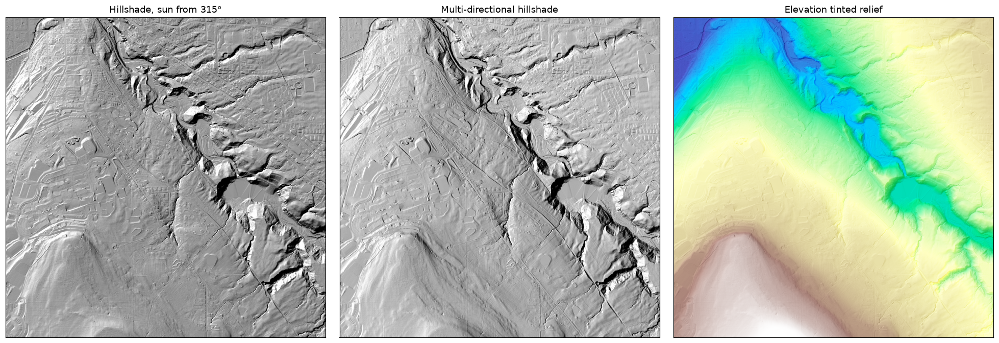
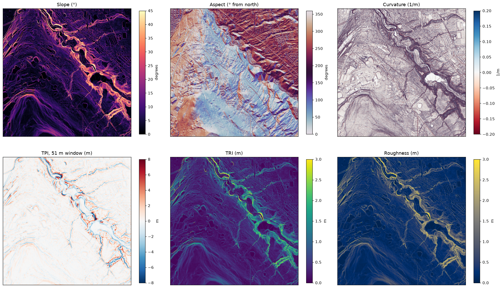
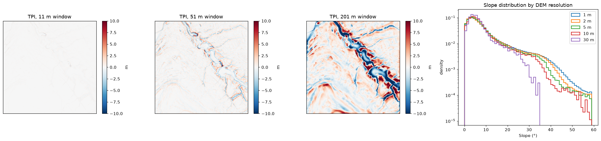
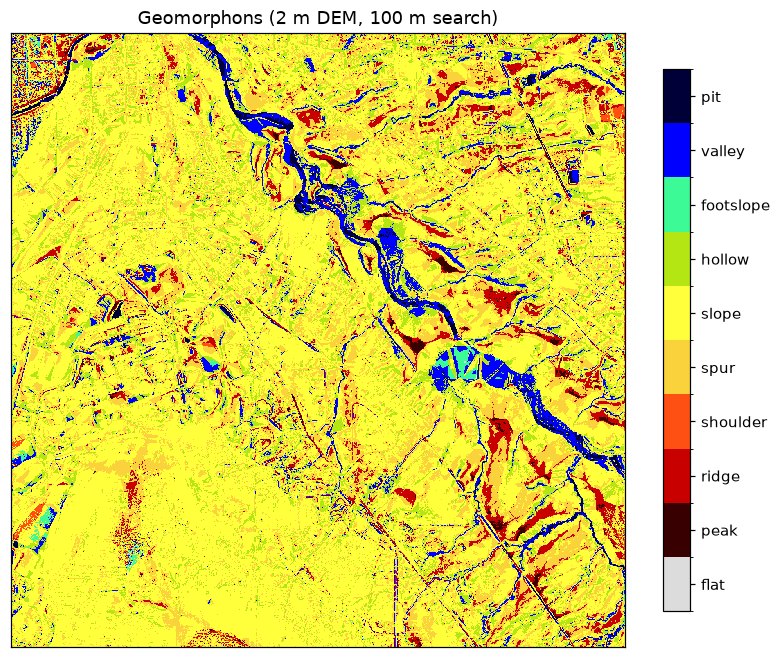
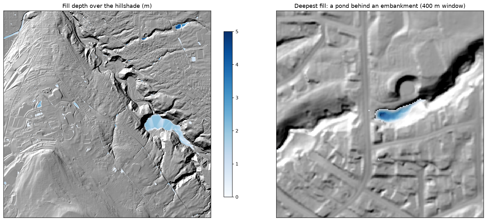
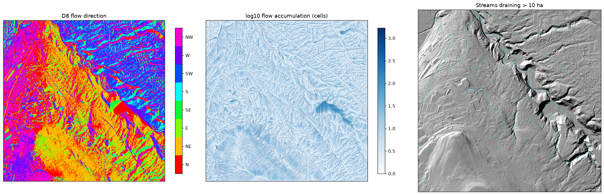
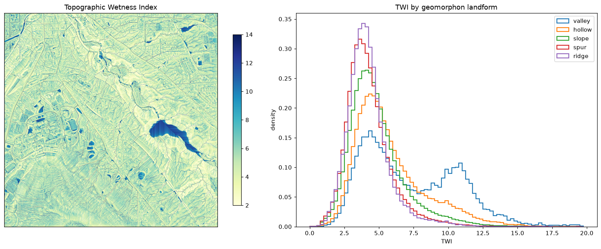
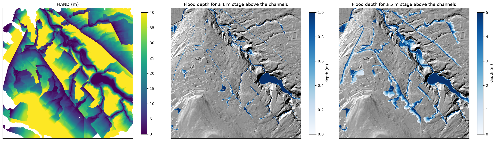
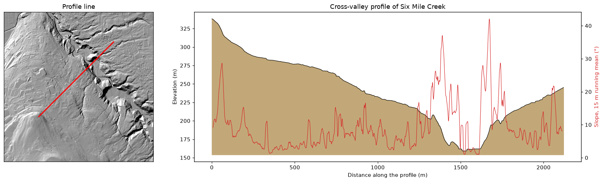

A LiDAR bare-earth DEM shows terrain in metre-scale detail: stream channels, terraces, road embankments, ditches and gullies that coarser elevation models smooth away. This notebook builds a 1 m DEM of the Six Mile Creek valley in Ithaca, New York, from four USGS 3DEP tiles and derives the standard terrain variables (slope, aspect, curvature, topographic position, ruggedness, landforms) and hydrological layers (depression filling, flow direction and accumulation, stream networks, wetness index, height above nearest drainage and flood extent) with geolattice.rsense.lidar.
Overview
Terrain variables describe the shape of the land surface and are inputs to hydrology, soil, geomorphology, habitat and hazard models. They fall into two groups:
Local derivatives use only a small neighbourhood (usually 3 x 3 cells): slope, aspect, curvature, ruggedness and hillshade. They can be computed independently for every cell, so they parallelise well and run on a GPU.
Regional or flow-based variables depend on the whole upstream area: flow accumulation, wetness index, height above drainage. They need a sequential routing algorithm over the entire DEM.
LiDAR DEMs bring their own challenges. At 1 m, bridges and road embankments without culverts act as dams in the DEM, water surfaces are noisy or empty because water absorbs the laser, and small artefacts create spurious pits. Hydrological work therefore usually conditions the DEM first: flattening water bodies, burning or breaching culverts and filling depressions.
Local terrain derivatives
Let \(z_{a}, \dots, z_{i}\) be the 3 x 3 neighbourhood of a cell (row-major from the top-left, \(z_e\) in the centre) with cell size \(\Delta x\), \(\Delta y\). Horn’s (1981) gradient weights the centre row and column twice:
Steepness; controls runoff speed, erosion and landslide risk
Aspect
Compass direction of steepest descent
Exposure to sun and wind; snow melt, vegetation
Curvature
Laplacian \(\nabla^2 z\)
Convex (ridges, negative here) versus concave (hollows, positive here); flow divergence and convergence
TPI
\(z - \bar z_{\text{window}}\)
Topographic Position Index: positive on ridges and hilltops, negative in valleys; depends on the window size
TRI
\(\sqrt{\sum (z_j - z_e)^2}\) over the 8 neighbours
Terrain Ruggedness Index (Riley et al. 1999)
Roughness
\(\max - \min\) in the 3 x 3 window
Local relief
Hillshade
\(255\,(\cos Z \cos \theta + \sin Z \sin \theta \cos(A - \phi))\)
Shaded relief for a sun at zenith angle \(Z\) and azimuth \(A\), for slope \(\theta\) and aspect \(\phi\)
Illumination
\(\cos i\), the same expression without scaling
Used for the topographic correction of optical images
Geomorphons (Jasiewicz and Stepinski 2013) classify landforms by looking along eight directions from each cell up to a search distance and recording whether the horizon is higher, lower or level. The pattern of “higher” and “lower” directions maps to ten landforms: flat, peak, ridge, shoulder, spur, slope, hollow, footslope, valley and pit. Unlike curvature, geomorphons adapt to the scale of the landform through the search distance.
Hydrological derivatives
Depression filling. Pits in the DEM trap flow. The priority-flood algorithm (Barnes et al. 2014) floods the DEM inwards from its edges, always continuing from the lowest cell on the boundary of the flooded region, and raises every pit to its spill level. A tiny gradient (\(\epsilon\)) on filled flats keeps water moving.
Flow direction (D8). Each cell drains to the one of its eight neighbours with the steepest downward slope (O’Callaghan and Mark 1984).
Flow accumulation. The number of cells (or the area) draining through each cell. Cells above a threshold form the stream network.
Topographic Wetness Index (Beven and Kirkby 1979): \(\text{TWI} = \ln(a / \tan\beta)\), with \(a\) the specific catchment area (upslope area per unit contour length) and \(\beta\) the slope. High TWI marks places where water collects and soils stay wet.
Height Above Nearest Drainage (HAND, Rennó et al. 2008): the height of each cell above the stream cell it drains to. HAND normalises the terrain to the drainage network, so a single water stage gives a first estimate of the flooded area along every stream.
Terrain and Hydrology with GeoLattice
Learning objectives
Build a seamless 1 m DEM from several LiDAR tiles and visualise it with single and multi-directional hillshades.
Compute slope, aspect, curvature, TPI, TRI and roughness, and understand how window size and DEM resolution change them.
Classify landforms with geomorphons.
Fill depressions and recognise where road embankments act as dams in a LiDAR DEM.
Derive flow direction, flow accumulation, a stream network, TWI and HAND.
Map flood extent from HAND for several water stages and export the products.
Four 1.5 km tiles of the USGS 3DEP NY Finger Lakes 2020 survey (55 million points, about 6.5 points/m², UTM zone 18N, NAVD88 heights) covering a 3 km x 3 km area of the Six Mile Creek valley and South Hill, Ithaca, New York
Only the ground points (class 2, about 47 % of the points) are needed for the DEM.
Contents
Setup
A seamless 1 m DEM from four tiles
Shaded relief
Local terrain derivatives
Scale: window size and DEM resolution
Landforms with geomorphons
Depression filling and road embankments
Flow direction, flow accumulation and streams
Topographic Wetness Index
Height Above Nearest Drainage and flood extent
A cross-valley profile
Exporting the products
Summary and exercises
Setup
Installation. This notebook needs installation option 5 (core, spatial analysis, spatial statistics, geostatistics and remote sensing): pip install "geolattice[remote-sensing]". See “Installation options” in the GeoLattice README.
Code
import warnings # warning controlwarnings.filterwarnings("ignore") # hide routine library warningsimport time # timingimport numpy as np # arraysimport pandas as pd # tablesimport xarray as xr # labelled rastersimport rasterio # raster I/Oimport matplotlib.pyplot as plt # figuresfrom matplotlib.colors import LightSource # multi-directional shadingimport geolattice.rsense as rs # GeoLattice remote sensingfrom geolattice.rsense.lidar.terrain import GEOMORPHON_CLASSES # landform code -> namerasterio.Env(CPL_LOG="/dev/null").__enter__() # silence GDAL log messagesplt.rcParams.update({"figure.dpi": 110}) # figure resolutionprint("geolattice.rsense", rs.__version__, "| backend:", rs.set_backend("cpu")) # version and array backend
geolattice.rsense 0.3.49 | backend: cpu
Code
from pathlib import Path # file paths# The notebook's data folder: ../../../../Data/08_remote_sensing/08_06_lidar/ next to this notebook, found from here or from the repository root.DATA =next((p for p in (Path("Data/08_remote_sensing/08_06_lidar"), Path("../../../../Data/08_remote_sensing/08_06_lidar"))if p.is_dir()), None)if DATA isNone: # neither location exists# stop with a clear messageraiseFileNotFoundError("Run the notebook from its own folder or from the GeoLattice repository root.")OUT = DATA.parent /"outputs"# folder for the products this notebook writesOUT.mkdir(exist_ok=True) # create it if neededTILES = [DATA /"Ithaca"/f"u_{t}.las"for t in ("3765069650", "3765069800", "3780069650", "3780069800")] # 2 x 2 tilesfor p in TILES: # each tile info = rs.lidar.las_info(p) # header only# summary lineprint(f"{p.name}: {info['point_count']:,} points, x {info['mins'][0]:.0f} to {info['maxs'][0]:.0f}, "f"y {info['mins'][1]:.0f} to {info['maxs'][1]:.0f}") # size and extent
u_3765069650.las: 12,002,154 points, x 376500 to 378000, y 4696500 to 4698000
u_3765069800.las: 13,924,217 points, x 376500 to 378000, y 4698000 to 4699500
u_3780069650.las: 14,334,357 points, x 378000 to 379500, y 4696500 to 4698000
u_3780069800.las: 15,062,245 points, x 378000 to 379500, y 4698000 to 4699500
A seamless 1 m DEM from four tiles
Each tile is read with only the fields the DEM needs (fields=["classification"] plus x, y, z), reduced to its ground points and gridded with rs.lidar.dem on the tile’s exact 1.5 km extent. Passing the tile bounds keeps the four grids aligned, so rs.lidar.merge_rasters can mosaic them without resampling. A DEM built tile by tile can show small steps at the seams, because interpolation near a tile edge only sees the points on one side; the large-area notebook shows how buffered tiles avoid this.
Code
t0 = time.perf_counter() # start the timerdems, n_ground = [], 0# tile DEMs and ground-point countfor p in TILES: # each tile x0, y0 = (int(v) for v in rs.lidar.las_info(p)["mins"][:2]) # south-west corner of the tile g = rs.lidar.read_las(p, fields=["classification"]).ground() # ground points only n_ground +=len(g) # count them dems.append(rs.lidar.dem(g, 1.0, bounds=(x0, y0, x0 +1500, y0 +1500))) # 1 m DEM on the tile's extentdem = rs.lidar.merge_rasters(dems).rename("elevation") # mosaic of the four tiles# summary lineprint(f"{n_ground:,} ground points -> DEM {dem.shape} at 1 m in {time.perf_counter() - t0:.0f} s | "f"elevation {float(dem.min()):.1f} to {float(dem.max()):.1f} m | CRS {dem.rio.crs}") # summarydem2 = dem.coarsen(x=2, y=2, boundary="trim").mean().rio.write_crs(dem.rio.crs) # 2 m version for hydrology
26,279,644 ground points -> DEM (3000, 3000) at 1 m in 114 s | elevation 117.6 to 386.0 m | CRS COMPD_CS["NAD83(2011) / UTM zone 18N + NAVD88 height - Geoid12B (metres)",PROJCS["NAD83(2011) / UTM zone 18N",GEOGCS["NAD83(2011)",DATUM["NAD83_National_Spatial_Reference_System_2011",SPHEROID["GRS 1980",6378137,298.257222101],AUTHORITY["EPSG","1116"]],PRIMEM["Greenwich",0],UNIT["degree",0.0174532925199433,AUTHORITY["EPSG","9122"]],AUTHORITY["EPSG","6318"]],PROJECTION["Transverse_Mercator"],PARAMETER["latitude_of_origin",0],PARAMETER["central_meridian",-75],PARAMETER["scale_factor",0.9996],PARAMETER["false_easting",500000],PARAMETER["false_northing",0],UNIT["metre",1],AXIS["X",EAST],AXIS["Y",NORTH],AUTHORITY["EPSG","6347"]],VERT_CS["NAVD88 height",VERT_DATUM["North American Vertical Datum 1988",2005],UNIT["metre",1],AXIS["Up",UP],AUTHORITY["EPSG","5703"]]]
Shaded relief
A hillshade lit from one direction hides features parallel to the light. A multi-directional hillshade averages several azimuths, and combining it with colour-coded elevation (a “hypsometric tint”) shows both relief and absolute height.
Code
hs315 = rs.lidar.hillshade(dem, azimuth=315, altitude=45) # classic north-west lighths_multi =sum(rs.lidar.hillshade(dem, azimuth=a, altitude=45) for a in (225, 270, 315, 360)) /4# four azimuthsls = LightSource(azdeg=315, altdeg=45) # light source for the tinted relief# elevation colours shaded by relieftinted = ls.shade(np.nan_to_num(dem.values, nan=float(dem.mean())), cmap=plt.cm.terrain, blend_mode="soft", vert_exag=2, dx=1, dy=1) # elevation colours shaded by relieffig, axes = plt.subplots(1, 3, figsize=(18, 6)) # three panelsrs.viz.plot_raster(hs315, ax=axes[0], cmap="gray", colorbar=False, title="Hillshade, sun from 315°") # one lightrs.viz.plot_raster(hs_multi, ax=axes[1], cmap="gray", colorbar=False, title="Multi-directional hillshade") # four lightsaxes[2].imshow(tinted); axes[2].set_title("Elevation tinted relief") # colour relieffor a in axes: a.set_xticks([]); a.set_yticks([]) # no ticksplt.tight_layout(); plt.show() # draw

The valley of Six Mile Creek runs from the south-east to the north-west, with a reservoir pond in its middle reach and steep, gullied valley walls. South Hill rises to the south-west, and fields, roads, quarries and housing are visible on the plateaus. The 1 m DEM shows field boundaries, road cuts and individual driveways.
Local terrain derivatives
All six local derivatives come from the same 1 m DEM. TPI uses a 51-cell (51 m) window to capture valley and ridge positions rather than micro-relief.
Code
t0 = time.perf_counter() # start the timerderiv = {"Slope (°)": (rs.lidar.slope(dem), "magma", (0, 45)), # steepness"Aspect (° from north)": (rs.lidar.aspect(dem), "twilight", (0, 360)), # exposure"Curvature (1/m)": (rs.lidar.curvature(dem), "RdBu", (-0.2, 0.2)), # convex vs concave"TPI, 51 m window (m)": (rs.lidar.tpi(dem, window=51), "RdBu_r", (-8, 8)), # topographic position"TRI (m)": (rs.lidar.tri(dem), "viridis", (0, 3)), # ruggedness"Roughness (m)": (rs.lidar.roughness(dem), "cividis", (0, 3))} # local reliefprint(f"six derivatives of a {dem.size /1e6:.0f} million-cell DEM in {time.perf_counter() - t0:.1f} s") # timingfig, axes = plt.subplots(2, 3, figsize=(18, 11)) # six panelsfor ax, (title, (img, cmap, (lo, hi))) inzip(axes.ravel(), deriv.items()): # each derivative rs.viz.plot_raster(img, ax=ax, cmap=cmap, vmin=lo, vmax=hi, title=title) # map ax.set_xticks([]); ax.set_yticks([]) # no ticksplt.tight_layout(); plt.show() # draw
six derivatives of a 9 million-cell DEM in 0.8 s

Code
stats = pd.DataFrame({k: pd.Series(v[0].values.ravel()).describe(percentiles=[0.05, 0.5, 0.95]) # summary per layerfor k, v in deriv.items()}).T[["mean", "5%", "50%", "95%", "max"]]stats.round(3) # show it
mean
5%
50%
95%
max
Slope (°)
8.809
0.939
5.756
29.350
84.150
Aspect (° from north)
176.759
12.925
198.750
345.957
359.998
Curvature (1/m)
0.000
-0.297
0.000
0.289
29.183
TPI, 51 m window (m)
0.000
-1.502
0.013
1.421
10.961
TRI (m)
0.439
0.061
0.275
1.456
31.585
Roughness (m)
0.440
0.057
0.274
1.470
24.852
Slopes above 35 to 40° line the creek gorge and its side gullies; the plateaus are mostly below 5°. Curvature and roughness highlight sharp breaks such as road cuts, stream banks and building pads, while TPI with a 51 m window separates the valley floor (negative) from spurs and the valley rim (positive).
Illumination gives the cosine of the incidence angle of sunlight for a given sun position, the quantity used in topographic correction of optical images. rs.lidar.sun_positions gives the sun’s azimuth and elevation for a latitude, day and hour.
Code
sun = rs.lidar.sun_positions(42.43, days=[172, 355], hours=[10]) # 10:00 solar time on 21 June and 21 Decemberprint(sun) # sun azimuth and elevationfig, axes = plt.subplots(1, 2, figsize=(13, 5.5)) # two panelsfor ax, (_, s) inzip(axes, sun.iterrows()): # each sun position cos_i = rs.lidar.illumination(dem2, s["azimuth"], s["elevation"]) # cos of the incidence angle rs.viz.plot_raster(cos_i, ax=ax, cmap="inferno", vmin=0, vmax=1, # map title=f"cos(i), day {int(s['day'])}: sun at {s['elevation']:.0f}° elevation") ax.set_xticks([]); ax.set_yticks([]) # no ticksplt.tight_layout(); plt.show() # draw
Terrain variables are not unique properties of a place: they depend on the DEM resolution and on the window size. The left panel shows TPI at three window sizes; the table and right panel show how the slope distribution changes when the 1 m DEM is aggregated to coarser cells, as it would be for a 10 m or 30 m national DEM.
Code
fig, axes = plt.subplots(1, 4, figsize=(20, 4.8), gridspec_kw={"width_ratios": [1, 1, 1, 1.2]}) # four panelsfor ax, w inzip(axes[:3], (11, 51, 201)): # three TPI windows (cells = m) rs.viz.plot_raster(rs.lidar.tpi(dem2, window=max(3, w //2) |1), ax=ax, cmap="RdBu_r", vmin=-10, vmax=10, # TPI map title=f"TPI, {w} m window") ax.set_xticks([]); ax.set_yticks([]) # no ticksrows = {} # one row per resolutionfor res in (1, 2, 5, 10, 30): # aggregation factors (m) d = dem if res ==1else dem.coarsen(x=res, y=res, boundary="trim").mean().rio.write_crs(dem.rio.crs) # aggregate s = rs.lidar.slope(d).values.ravel() # slope values s = s[np.isfinite(s)] # drop empty cells rows[f"{res} m"] = {"mean slope (°)": s.mean(), "95th percentile (°)": np.percentile(s, 95), # statistics"share > 30° (%)": 100* np.mean(s >30)} axes[3].hist(s, bins=np.arange(0, 60, 1), histtype="step", density=True, lw=1.5, label=f"{res} m") # distributionaxes[3].set(xlabel="Slope (°)", ylabel="density", yscale="log", title="Slope distribution by DEM resolution") # labelsaxes[3].legend(); plt.tight_layout(); plt.show() # drawpd.DataFrame(rows).T.round(2) # show the table

mean slope (°)
95th percentile (°)
share > 30° (%)
1 m
8.81
29.35
4.71
2 m
8.46
28.06
4.15
5 m
7.99
25.43
3.07
10 m
7.57
23.15
2.11
30 m
6.72
18.55
0.17
Coarser DEMs average steep gorge walls with the flats beside them, so the steepest slopes disappear: the share of terrain steeper than 30° falls sharply between 1 m and 30 m. Models fitted with slope from one resolution should not be applied with slope from another.
Landforms with geomorphons
rs.lidar.geomorphons looks out to search cells in eight directions. With a 2 m DEM, a search of 50 cells (100 m) matches the width of the valley side slopes and gullies.
Code
geo = rs.lidar.geomorphons(dem2, search=50, flat_deg=1.0) # landform classes on the 2 m DEMgcol = {1: "#dcdcdc", 2: "#380000", 3: "#c80000", 4: "#ff5014", 5: "#fad23c", 6: "#ffff3c", 7: "#b4e614",8: "#3cfa96", 9: "#0000ff", 10: "#000038"} # standard geomorphon coloursfig, ax = plt.subplots(figsize=(9, 8)) # one panelrs.viz.plot_raster(geo.where(geo >0), ax=ax, title="Geomorphons (2 m DEM, 100 m search)", # landform map categorical={k: (v, gcol[k]) for k, v in GEOMORPHON_CLASSES.items()})ax.set_xticks([]); ax.set_yticks([]); plt.show() # drawpd.Series(geo.values.ravel()).map(GEOMORPHON_CLASSES).value_counts(normalize=True).round(3).to_frame("share").T # shares

slope
spur
hollow
ridge
valley
pit
peak
footslope
shoulder
flat
share
0.541
0.203
0.126
0.055
0.049
0.011
0.007
0.004
0.004
0.0
Depression filling and road embankments
rs.lidar.fill_depressions raises every pit to its spill point. The fill depth (filled minus original DEM) shows where water would pond if it could not escape. In a LiDAR DEM most large “depressions” are not real: they sit upstream of road embankments, driveways and dams, where the water actually passes through a culvert that the laser cannot see.
Code
t0 = time.perf_counter() # start the timerfilled = rs.lidar.fill_depressions(dem2) # priority-flood filling on the 2 m DEMfill_depth = (filled - dem2).where(lambda d: d >0.05) # where the DEM was raised by more than 5 cm# summary lineprint(f"filled in {time.perf_counter() - t0:.1f} s | raised cells: {float(fill_depth.notnull().mean()):.1%} | "f"largest fill {float(fill_depth.max()):.1f} m | filled volume {float(fill_depth.sum() *4) /1e3:,.0f} thousand m³") # summaryfig, axes = plt.subplots(1, 2, figsize=(15, 6.5)) # two panelsrs.viz.plot_raster(rs.lidar.hillshade(dem2), ax=axes[0], cmap="gray", colorbar=False, # relief background title="Fill depth over the hillshade (m)")fd_plot = fill_depth.where(fill_depth >0.2) # fills deeper than 20 cmim = axes[0].imshow(fd_plot.values, cmap="Blues", vmin=0, vmax=5, # fill depth overlay extent=[float(dem2.x.min()), float(dem2.x.max()), float(dem2.y.min()), float(dem2.y.max())])plt.colorbar(im, ax=axes[0], shrink=0.8) # colour barbig = fill_depth.where(fill_depth >1).notnull() # fills deeper than 1 mrr, cc = np.unravel_index(np.nanargmax(np.where(big, fill_depth.values, np.nan)), big.shape) # deepest fillwin =dict(y=slice(max(rr -100, 0), rr +100), x=slice(max(cc -100, 0), cc +100)) # 400 m window around itrs.viz.plot_raster(rs.lidar.hillshade(dem2).isel(win), ax=axes[1], cmap="gray", colorbar=False, # zoomed relief title="Deepest fill: a pond behind an embankment (400 m window)")sub = fill_depth.isel(win) # zoomed fill depthaxes[1].imshow(sub.where(sub >0.2).values, cmap="Blues", vmin=0, vmax=float(sub.max()), alpha=0.8, # overlay extent=[float(sub.x.min()), float(sub.x.max()), float(sub.y.min()), float(sub.y.max())])for a in axes: a.set_xticks([]); a.set_yticks([]) # no ticksplt.tight_layout(); plt.show() # draw
filled in 9.1 s | raised cells: 3.0% | largest fill 7.2 m | filled volume 255 thousand m³

The deepest fills sit upstream of road embankments and of the dam on Six Mile Creek. Filling them gives a DEM in which water always reaches the edge, but it also creates large artificial lakes. Hydrological DEM conditioning therefore “burns” culverts and bridges into the DEM (lowering the embankment along the culvert) before filling; national products such as the USGS 3DEP hydro-flattened DEMs and the NHDPlus HR use such conditioning.
Flow direction, flow accumulation and streams
rs.lidar.flow_direction gives the D8 receiver of every cell (0 = north, clockwise to 7 = north-west) and rs.lidar.flow_accumulation the number of upslope cells. Cells draining more than 10 ha (25,000 cells of 4 m²) are taken as streams.
Code
t0 = time.perf_counter() # start the timerfdir = rs.lidar.flow_direction(filled) # D8 directionsacc = rs.lidar.flow_accumulation(filled, filled=True) # upslope cells# summary lineprint(f"flow direction and accumulation in {time.perf_counter() - t0:.1f} s | max {float(acc.max()):,.0f} cells "f"= {float(acc.max()) *4/1e6:.1f} km² draining through one cell") # largest catchment in the windowSTREAM_CELLS =25_000# 10 ha at 2 m cellsstreams = acc >= STREAM_CELLS # stream networkfig, axes = plt.subplots(1, 3, figsize=(19, 6)) # three panelsrs.viz.plot_raster(fdir.where(fdir >=0), ax=axes[0], title="D8 flow direction", # directions categorical={i: (n, plt.cm.hsv(i /8)) for i, n inenumerate(["N", "NE", "E", "SE", "S", "SW", "W", "NW"])})rs.viz.plot_raster(np.log10(acc), ax=axes[1], cmap="Blues", title="log10 flow accumulation (cells)") # accumulationrs.viz.plot_raster(rs.lidar.hillshade(dem2), ax=axes[2], cmap="gray", colorbar=False, # relief background title="Streams draining > 10 ha")ext = [float(dem2.x.min()), float(dem2.x.max()), float(dem2.y.min()), float(dem2.y.max())] # map extentaxes[2].imshow(np.where(streams, 1, np.nan), cmap="cool", extent=ext, interpolation="nearest") # streamsfor a in axes: a.set_xticks([]); a.set_yticks([]) # no ticksplt.tight_layout(); plt.show() # draw
flow direction and accumulation in 0.7 s | max 1,722,520 cells = 6.9 km² draining through one cell

Six Mile Creek collects most of the flow, joined by side streams from the gullies on both valley walls. On the flat fields and filled ponds D8 routes water along parallel straight lines (the striped texture of the accumulation map), a known artefact of single-direction routing on flats; multiple-flow-direction methods spread the flow more realistically on hillslopes.
Topographic Wetness Index
rs.lidar.twi combines the specific catchment area with the local slope. Valley floors, hollows and the edges of flat fields have high TWI; ridges and steep walls have low TWI.
Code
twi = rs.lidar.twi(filled) # ln(a / tan β)fig, axes = plt.subplots(1, 2, figsize=(15, 6)) # two panelsrs.viz.plot_raster(twi, ax=axes[0], cmap="YlGnBu", vmin=2, vmax=14, title="Topographic Wetness Index") # mapaxes[0].set_xticks([]); axes[0].set_yticks([]) # no ticksfor name, cls in (("valley", 9), ("hollow", 7), ("slope", 6), ("spur", 5), ("ridge", 3)): # landforms v = twi.values[geo.values == cls] # TWI of that landform axes[1].hist(v[np.isfinite(v)], bins=np.arange(0, 20, 0.25), histtype="step", density=True, lw=1.5, label=name) # histogramaxes[1].set(xlabel="TWI", ylabel="density", title="TWI by geomorphon landform"); axes[1].legend() # labelsplt.tight_layout(); plt.show() # draw

Height Above Nearest Drainage and flood extent
rs.lidar.hand follows the D8 path from every cell to the first stream cell and subtracts the stream’s elevation. rs.lidar.inundation on the HAND raster then gives the area below a water stage measured above the channel, connected to the stream network. This is the basis of the NOAA National Water Model’s continental flood inundation maps; it ignores hydraulics (velocity, backwater, embankments), so it is a first screening, not a flood model.
Code
hand = rs.lidar.hand(filled, threshold=STREAM_CELLS, filled=True) # height above the nearest stream (m)stream_xy = [(float(dem2.x[c]), float(dem2.y[r])) for r, c inzip(*np.nonzero(streams.values))][::50] # seed points on streamsfloods = {stage: rs.lidar.inundation(hand, stage, seeds=stream_xy) for stage in (1, 3, 5)} # three stages (m)fig, axes = plt.subplots(1, 3, figsize=(19, 6)) # three panelsrs.viz.plot_raster(hand, ax=axes[0], cmap="viridis", vmin=0, vmax=40, title="HAND (m)") # HAND mapfor ax, stage inzip(axes[1:], (1, 5)): # two stages rs.viz.plot_raster(rs.lidar.hillshade(dem2), ax=ax, cmap="gray", colorbar=False, # relief background title=f"Flood depth for a {stage} m stage above the channels") d = floods[stage]["depth"] # depth raster im = ax.imshow(d.values, cmap="Blues", vmin=0, vmax=stage, extent=ext, interpolation="nearest") # depth overlay plt.colorbar(im, ax=ax, shrink=0.8, label="depth (m)") # colour barfor a in axes: a.set_xticks([]); a.set_yticks([]) # no ticksplt.tight_layout(); plt.show() # drawpd.DataFrame({f"{s} m stage": {"flooded area (ha)": float(f["extent"].sum()) *4/1e4, # area per stage"mean depth (m)": float(f["depth"].mean())} for s, f in floods.items()}).T.round(2)

flooded area (ha)
mean depth (m)
1 m stage
46.08
0.74
3 m stage
84.96
1.94
5 m stage
126.02
2.98
HAND is low along Six Mile Creek, its tributaries and the reservoir, and rises quickly up the valley walls. White areas have no HAND value: they drain off the edge of this 3 km window before reaching a stream cell, which is why HAND and flow accumulation should be computed on a DEM that covers whole catchments. Some straight flooded lines follow roadside ditches and an old railway grade, which the 1 m DEM resolves as channels. The 1 m stage already fills the reservoir and the creek bed; the 5 m stage spreads onto the low terraces of the valley floor.
A cross-valley profile
Sampling the DEM along a line across the valley shows the shape of the gorge, the reservoir surface and the plateaus on both sides. xarray’s interp samples the DEM at points spaced 1 m apart along the line.
Code
x0, y0, x1, y1 =377200, 4697400, 378700, 4698900# from the south-west plateau to the north-east plateaun =int(np.hypot(x1 - x0, y1 - y0)) # one sample per metrexs, ys = np.linspace(x0, x1, n), np.linspace(y0, y1, n) # sample positionsprof = dem.interp(x=xr.DataArray(xs, dims="d"), y=xr.DataArray(ys, dims="d")) # bilinear samples of the DEMslp = rs.lidar.slope(dem).interp(x=xr.DataArray(xs, dims="d"), y=xr.DataArray(ys, dims="d")) # slope along the linefig, axes = plt.subplots(1, 2, figsize=(16, 4.8), gridspec_kw={"width_ratios": [1, 2.2]}) # two panelsrs.viz.plot_raster(rs.lidar.hillshade(dem2), ax=axes[0], cmap="gray", colorbar=False, title="Profile line") # mapaxes[0].plot([x0, x1], [y0, y1], "r-", lw=2); axes[0].set_xticks([]); axes[0].set_yticks([]) # the lineaxes[1].fill_between(np.arange(n), prof, float(prof.min()) -5, color="#c2a878") # terrain profileaxes[1].plot(np.arange(n), prof, "k-", lw=0.8) # outlineax2 = axes[1].twinx(); ax2.plot(np.arange(n), slp.rolling(d=15, center=True).mean(), color="C3", lw=0.8) # 15 m mean slopeax2.set_ylabel("Slope, 15 m running mean (°)", color="C3") # slope labelaxes[1].set(xlabel="Distance along the profile (m)", ylabel="Elevation (m)", title="Cross-valley profile of Six Mile Creek") # labelsplt.tight_layout(); plt.show() # draw

Exporting the products
The DEM and the derived layers are written as Cloud-Optimized GeoTIFFs with rs.write.
Code
# products to savelayers = {"ithaca_dem_1m": dem, "ithaca_slope_1m": deriv["Slope (°)"][0], "ithaca_tpi51_1m": deriv["TPI, 51 m window (m)"][0],"ithaca_geomorphons_2m": geo.astype("uint8"), "ithaca_flowacc_2m": acc, "ithaca_twi_2m": twi,"ithaca_hand_2m": hand, "ithaca_flood_depth_3m_stage": floods[3]["depth"]} # products to savefor name, da in layers.items(): # each product rs.write(da if da.dtype =="uint8"else da.astype("float32"), OUT /f"{name}.tif") # COGprint(f"{name +'.tif':32s}{(OUT /f'{name}.tif').stat().st_size /1e6:6.1f} MB") # name and size
A seamless DEM from several tiles needs grids aligned to the same origin; tile-by-tile interpolation can leave small seams, which buffered tiles avoid.
Slope, aspect, curvature, TPI, TRI and roughness are local derivatives; their values depend on the DEM resolution and the window size, so models must use the same scale for fitting and prediction.
Geomorphons classify landforms from line-of-sight patterns and adapt to the scale of the landform through the search distance.
In 1 m LiDAR DEMs, road embankments and dams create large artificial depressions; condition the DEM (burn culverts, flatten water) before routing flow.
D8 flow accumulation gives stream networks; TWI marks wet areas; HAND relative to the stream network gives a quick first estimate of flood extent for a given stage.
Build the DEM from all ten Ithaca tiles at 2 m. Where do the tile seams show in a hillshade?
Change the stream threshold to 1 ha and 100 ha. How does the drainage density (stream length per km²) change?
Compute geomorphons with search distances of 10, 50 and 150 cells. Which landforms appear or disappear?
Lower the DEM by 3 m along a short line across the road embankment with the deepest fill (a “burned” culvert) and fill again. How much of the artificial pond disappears?
Compare TWI computed on the 2 m and on a 10 m version of the DEM. Which places change most?